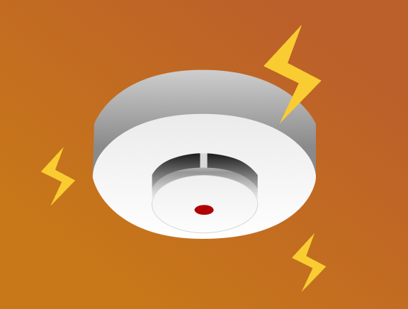

使用住警器
有效降低火災傷害
家中安裝住宅用火災警報器，可在火災初期偵測到濃煙或高溫。
在火災發生的第一時間發出警示音
讓我們在第一時間察覺火災發生，，應立即逃生

家中安裝住宅用火災警報器，可在火災初期偵測到濃煙或高溫。
在火災發生的第一時間發出警示音
讓我們在第一時間察覺火災發生，，應立即逃生
家中安裝住宅用火災警報器，可在火災初期偵測到濃煙或高溫。
在火災發生的第一時間發出警示音
讓我們在第一時間察覺火災發生，應立即逃生
偵煙式住警器建議安裝在臥室、客廳等地方，它以濃煙為主要判斷依據，當空間內的煙濃度變化達到一定數值時，就會發出警報
偵熱式住警器建議安裝廚房、神明廳等地方，它以溫度為判斷依據，當空間內的溫度達一定程度時，就會觸發警報